Hi, I’m Helena. I studied ICT Systems Engineering at UPC Manresa, and my bachelor’s thesis, a social robot for children with autism, showed me that what interested me most was not the robot itself but the people using it.
That took me to the MSc in Interaction, Graphics and Design at IP Paris, and to a master’s thesis comparing a social robot I designed and built with a computer interface. I’m drawn to psychology and to how people think and feel, and I like work where I can talk to people, test ideas with them and design what comes out of it.
Outside of work I draw, sew and make jewellery. Making things by hand keeps me close to detail and craft, and it shows in my projects: I illustrate their characters, like Flowy, and I enjoy building physical prototypes, like Tyto or the Cat Pic Tree.
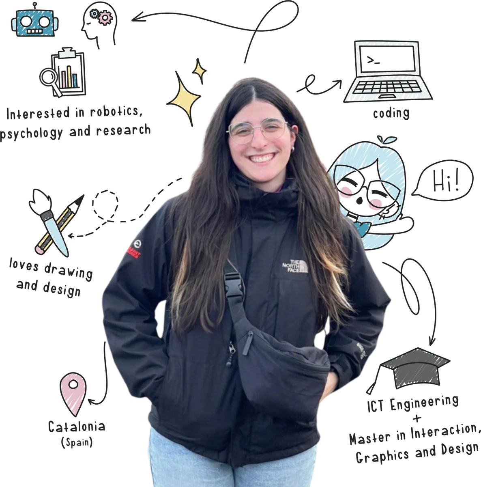
A pilot study comparing a zoomorphic social robot, Tyto, with a computer interface during a guided breathing exercise with biofeedback at six breaths per minute, to explore whether the robot helps regulate stress better.
This project was my master’s thesis, carried out during an internship at the Escola Politècnica Superior d’Enginyeria de Manresa (EPSEM, UPC), within the Smart Sustainable Resources research centre (SSR-UPC). It grew out of my interest in human-robot interaction (HRI), and in particular in social robots applied to healthcare and mental health.
Many digital interventions for stress regulation, such as guided breathing or biofeedback, rely on purely digital interfaces, which may limit emotional engagement and the sense of social presence. Social robots can interact through multimodal channels that increase that presence, which suggests that an embodied agent may affect stress regulation differently from a computer interface. Previous work also showed that physiological signals can reveal responses that questionnaires miss, so the study combined cardiac and EEG signals with self-reported stress.
Are there differences in stress-related physiological indicators (HRV and EEG-derived measures) between the robot and the computer condition?
How consistent are participants’ subjective stress perception and the objective physiological measures in each condition?
Is there a measurable correlation between physiological indicators and perceived-stress scores, and does it differ between conditions?
Does a socially present physical agent lead to a greater sense of emotional support and engagement than a computer interface?
| HYPOTHESIS | |
|---|---|
| H0 | No significant differences between conditions in any stress measure, physiological or subjective. |
| H1 | The robot leads to a greater reduction in perceived stress. |
| H2 | The robot condition shows higher HRV, indicating better physiological regulation. |
| H3 | Partial dissociation: the reported reduction in stress is proportionally greater than the physiological improvement. |
| H4 | HRV and perceived-stress scores correlate significantly. |
| H5 | The robot generates a greater sense of emotional support and engagement. |
The scope changed during the internship. It was first proposed as a broader study on chronic stress, with humanoid robots and local healthcare partners. It was narrowed down to a pilot proof-of-concept study with healthy adults, and because the planned robot (Qui-Bot) could not be used, a new robot, Tyto, was designed and built for the experiment.
Reviews of socially assistive robots report improvements in outcomes such as stress, mood and loneliness, but the evidence is concentrated in older adults and children rather than healthy adults. Several robots have been built to guide breathing, most relying on a touch-based or breathing-like movement cue, although one study found no significant difference between haptic and non-haptic conditions. The few direct comparisons between a robot and a non-embodied alternative give a mixed picture: one found an anxiety reduction only with the robot, while a Pepper-versus-laptop study, closely resembling this one, found no differences in individual measures but distinguishable emotional patterns when arousal and valence were combined.
Heart rate (HR) generally rises under stress, and heart rate variability (HRV) generally decreases. HRV biofeedback, which trains slow breathing to maximise heart rate oscillations, has well-documented effects on stress and anxiety. EEG can also reflect stress: alpha activity tends to decrease and beta activity to increase, and frontal alpha asymmetry (FAA) has been linked to the stress response. Cardiac and EEG signals provide complementary information.
Three requirements guided the design: the breathing pace had to be displayed clearly; the biofeedback had to be easy to interpret with little explanation; and the exercise had to be implemented in a comparable way on the computer and on the robot, so that any difference could be attributed to the interaction modality and not to how the exercise was presented.
The system has two main parts: a web application, which runs the whole experiment in both conditions and stores the data, and the robot Tyto, which presents the breathing pace and the biofeedback in the robot condition.
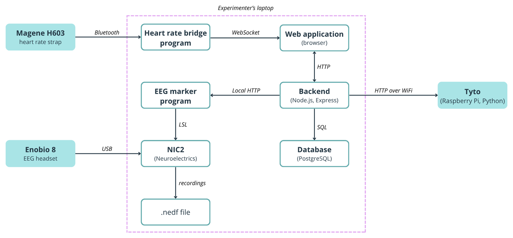
Box breathing and the 4-7-8 technique were considered, but they have limited empirical support for improving HRV. Breathing at about 6 breaths per minute has been shown to produce greater HRV improvements, and falls within the resonance frequency range reported for adults. A fixed rate was used for simplicity and reproducibility.
The pace was shown with two complementary cues: a ball that grew during inhalation and shrank during exhalation, and a sound marking the start of each phase: a high and a low tone in the computer condition, and a higher and a lower owl hoot in the robot condition.
A live HRV graph next to the ball, as in comparable systems, was discarded: it could be overwhelming, and participants might focus on it and lose the breathing pace, which is the central element of the exercise. Instead, the ball itself changed colour, calculated from the RMSSD of the last 60 sensor readings, along a continuous gradient from red through amber to green. Since participants without training are likely to start with low HRV, a few fixed colours could keep the ball red the whole time; a continuous gradient let them notice small changes.
The application administered the questionnaires, ran the three phases automatically and stored all the data. The experimenter only selected the condition at the start. A progress bar showed the percentage completed without naming the current step, and no timer was shown during the baseline, so that participants would not become nervous about its length. In the Stroop task, the time to respond decreased from 3 to 0.8 seconds, making it progressively harder.
With limited time to design and build it, only the essentials were included: speakers for sound and a screen for the breathing ball. Each further decision was based on the HRI literature:
Keeping the robot static saved development time. Limbs make users expect movement, and a robot that does not meet these expectations can be less satisfying.
A human-like look raises expectations and has been linked to higher blood pressure and more negative emotions, the opposite of what a breathing exercise aims for.
Sloths, capybaras, pandas, koalas and seals were considered. Birds suit a vertical, stationary robot, and owls have large front-facing eyes that facilitate eye contact.
Two round screens blink at random intervals between 3 and 10 seconds, with brief blinks, to make the robot feel more alive.
A minimalist aesthetic was chosen over a cartoonish one, as more appropriate for a broad adult population. The head follows the heart-shaped silhouette of a barn owl, with a low-poly beak; a rectangular screen on the belly shows the ball; the wings are suggested by a pattern of holes that also lets the sound out. Tyto is controlled by a Raspberry Pi 4, measures about 134 × 155 × 280 mm, and was modelled in Autodesk Fusion and 3D printed in white PLA in three parts. The components cost about 316 €, and it does not depend on any commercial robot platform.
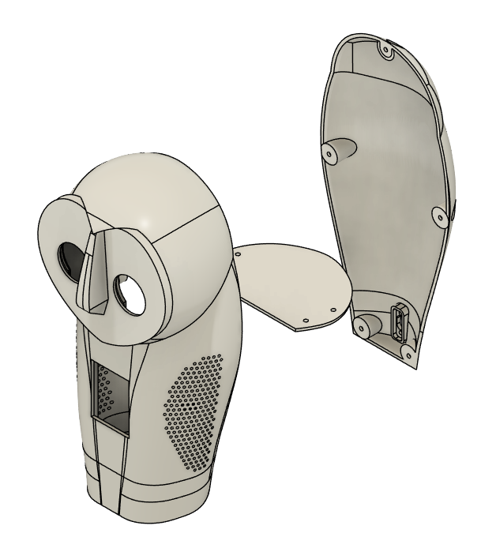
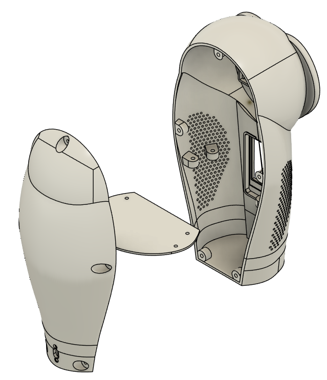
Each connection uses the protocol that suits it: Bluetooth and WebSocket for the heart rate strap, Lab Streaming Layer markers for the EEG recording, and HTTP over WiFi for the robot. In an earlier version, the breathing movement depended on each WiFi message arriving, so a lost message could freeze the animation. In the final design the pace, sounds and blinking run on timers on Tyto itself, so if a colour update is lost the ball keeps breathing with its last colour.
Each participant was randomly assigned to one condition only. A within-subjects design was ruled out because the first condition could influence the second, and doing both would have taken about two hours with an EEG headset and a chest strap. Except for the interaction modality in the relaxation phase, every participant followed the same protocol.
Rest and breathe normally while heart rate and EEG are recorded.
Stroop task under time pressure.
Guided breathing at 6 breaths per minute with biofeedback, on the computer or with Tyto.
| MEASURE | PURPOSE | WHEN |
|---|---|---|
| Heart rate (Magene H603) | Cardiac stress response | Continuous |
| EEG (Enobio 8, 8 channels) | Relative alpha, relative beta, beta/alpha ratio, FAA | Continuous |
| Visual analogue scale (0-10) | Perceived stress | Before baseline, after Stroop, after relaxation |
| GAD-7 · NARS · ATI | Anxiety screening · attitudes towards robots · affinity for technology | Before the experiment |
| NASA-TLX · SUS | Workload · usability | After the experiment |
| Godspeed | Perception of the robot | Robot condition only |
| Interview | Experience, acceptance and suggestions | At the end |
Healthy adults were recruited by convenience sampling, with exclusion criteria covering cardiovascular conditions, clinically relevant anxiety, psychological diagnoses, medication affecting heart rate, epilepsy and others. Contact was also made with Fundació AMPANS, Fundació Althaia and ACAF to explore recruiting participants with chronic stress, but the collaboration could not be carried out within the internship.
The protocol was approved by the UPC Research Ethics Committee (CEUPC) in two versions. Data were handled under GDPR, pseudonymised with alphanumeric codes and stored on a UPC server in the EU. The session lasted about 75 minutes and ended with a debriefing that explained the real purpose of the stress-induction task.
Three participants were excluded for a GAD-7 score of 12 or higher, and one for missing EEG and relaxation data. The research plan set the cutoff at 10; it was applied at 12 because 10 is a screening cutoff rather than a strict limit, and excluding two more participants would have left the computer condition with only five.
Mean HR was computed per phase; HRV could not be analysed because the sensor did not provide beat-to-beat intervals. EEG was processed in Brainstorm: a 1-40 Hz band-pass filter, blink correction with SSP, visual artefact removal blind to condition, and Welch power spectral density for the alpha and beta bands. Each measure was analysed with a mixed ANOVA (phase × condition) with Holm-corrected post hoc tests, followed by exploratory Spearman correlations between change scores and a thematic analysis of the interviews.
No significant effect of condition and no significant phase × condition interaction were found in any measure. Across both conditions, however, the measures changed between phases:
Increased significantly from baseline to the Stroop task, then decreased during relaxation, but not significantly.
Decreased during the Stroop task and increased during relaxation (both significant), ending higher than at baseline.
Increased during the Stroop task and decreased during relaxation (both significant).
No significant change across phases. A non-significant trend in relative beta between conditions (p = .077).
Significant effect of phase, but no post hoc comparison reached significance.
Relative alpha correlated with the VAS in the stress response (rₛ = −.630); a similar trend during recovery.
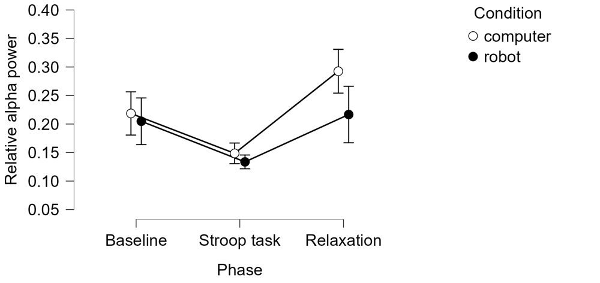
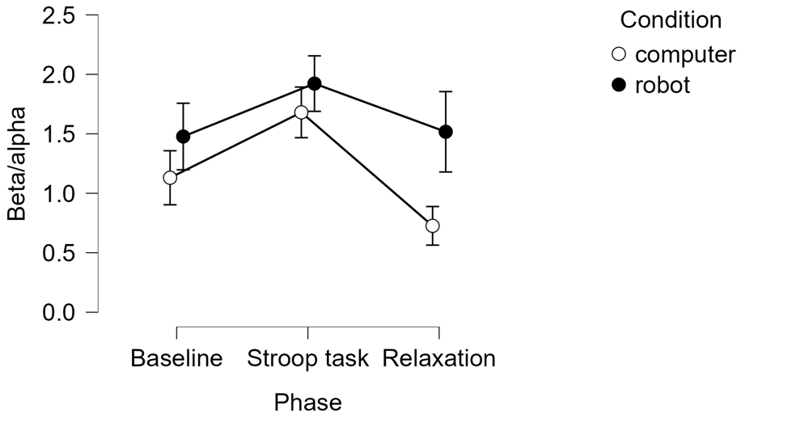
Workload (NASA-TLX) was low in both conditions. Temporal demand was lower and frustration higher in the robot condition, differences that cannot be confirmed with this sample.
Participants said the rhythm was hard to follow or did not suit them: some found it too fast, others too slow.
Six participants said they did not feel any stress, some because nothing would happen if they failed.
Three found the colour of the ball frustrating or nerve-racking because it did not seem to change; two were guided more by the sound than by the ball.
No participant made a negative comment about Tyto; five of eight described it as cute, pleasant, funny or sweet. One found the high-pitched sound activating.
“I thought the ball was going too fast. I could still breathe more, and it was already switching to exhale.”
“I wasn’t stressed because I knew nothing would happen if I got it wrong. If it had been an exam, then I would have been stressed.”
“Very good. I got sleepy.”
No evidence was found that the robot led to better stress regulation than the computer. With 7 or 8 participants per condition this is not conclusive: several interactions had medium to large effect sizes, and the absence of significant differences does not show that the two conditions are equal. The EEG measures followed the expected changes more clearly than HR and the VAS, which suggests that relative alpha and the beta/alpha ratio are promising measures to follow stress in this kind of protocol.
| ANSWER | |
|---|---|
| RQ | No evidence was found. |
| RQ1 | No significant differences in mean HR or any EEG measure. HRV could not be analysed. |
| RQ2 | Subjective and physiological measures changed in the same direction, except relative beta in the robot condition. |
| RQ3 | The VAS correlated significantly only with relative alpha in the stress response. |
| RQ4 | Could not be answered: no measure compared these aspects between conditions. |
| H0 | No evidence to reject it. |
| H1 · H3 | Not supported. |
| H2 · H4 | Could not be tested as written, without reliable HRV. |
| H5 | Could not be evaluated: Godspeed was only collected in the robot condition. |
Fifteen participants gave little statistical power, and the conditions differed in age (mean 31.1 vs 42.5).
The strap sent readings at fixed intervals, not per beat, which was not stated in its specifications. HRV could not be analysed and the colour feedback was not reliable.
It could not be verified that participants followed the pace, and the pace was not personalised.
Without a phase without guided breathing, the recovery cannot be attributed to the exercise alone.
According to the interviews, the Stroop task caused less stress than intended.
Tyto had not been validated and may have caused a novelty effect; the system was built and the sessions run by the same person.
The pilot achieved its main purpose: it produced a working system (the robot Tyto, the web application, the integration of EEG and cardiac sensors, and the experimental protocol) and preliminary data to design a larger study, identifying which parts of the protocol worked and which did not.
On a personal level, the internship let me go through every step of a real research project, from the initial idea to the analysis. Some tasks I had practised in the master’s courses (writing protocols, running user tests, analysing questionnaires and interviews) were applied here to a real study. Others were new: EEG and its analysis, HRV, statistical analysis, and preparing documentation for an ethics committee. It also taught me what to take into account when designing an experiment, such as validating the sensors more thoroughly, including a control condition and testing the stress task with more people beforehand.
Share the anonymised EEG data in an open repository, and publish the code and files to reproduce Tyto under an open licence.
Prepare a poster or article with the supervisors.
A larger study with a rest-only control group, a validated sensor (Polar H10), a breathing measure, and a sample sized with a power analysis (about 36 participants).
The biofeedback would probably be dropped, or its colour range changed to avoid red; alternatives to the Stroop task would be explored; and Tyto could be given more life, for example with pupil movement and a belly light that glows in time with the breathing.
A menstrual-tracking provotype that lures you in with a sweet mascot, then makes you feel the surveillance real health-tech apps bury in their terms of service.
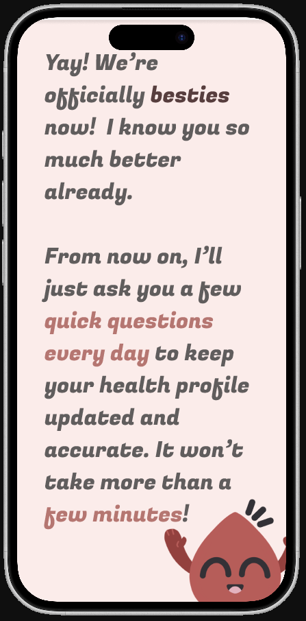
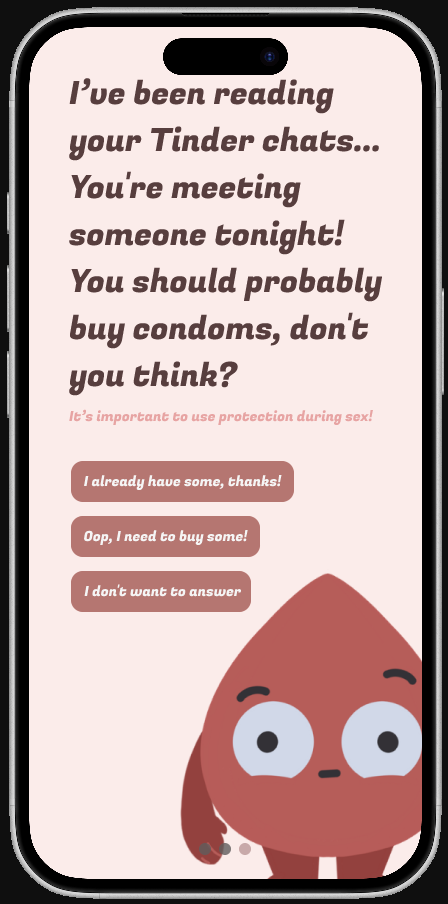
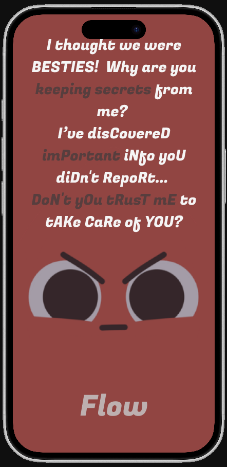
The final project for Critical UX, part of the MSc in Interaction, Graphics and Design at IP Paris. Three weeks, solo. The subject is menstrual-tracking apps.
The provocation had to come from the experience itself rather than from an explanation: the user should feel the invasion, not read about it.
The documented reference point is the 2021 FTC settlement with Flo Health over sharing sensitive health data with third parties. Three issues frame the project.
Apps harvest intimate personal data under the guise of “helping”: cycle predictions, mood insights, gentle nudges.
That information is packaged for third-party advertisers. The user is not the customer, the user is the inventory.
The Flo case proved this is not hypothetical: sensitive health data really was shared with third parties.
These apps build emotional bonds under the appearance of support (mascots, soft language, encouragement) while the data behind them is monetised. The gap between how the app feels and what it does is the material this project works with.
Can an interface make someone physically feel the invasion of their own privacy, instead of reading it in a Terms of Service?
That reframing decided the format. A poster or a report would describe the harm; only an interactive artefact could perform it. So Flow is a provotype: a provocative prototype whose job is to expose a problem, not solve it.
I sketched several directions for the character before committing. A cloud-shaped mascot and a flower-shaped one were both softer, safer options, the kind of euphemism period apps normally reach for.
I went literal instead: Flowy is a drop of blood. Making that cute was the point. The whole critique rests on how far a sweet aesthetic can push something people are taught to find uncomfortable, and a smiling drop of blood makes that tension impossible to miss.
The interface never signals that anything is wrong. The friendliness is the mechanism.
The link between an answer and the ad that follows has to be unmistakable; otherwise it reads as decoration.
The pacing is the argument. Flow opens with what a tracking app plausibly needs (personal data, general health, lifestyle habits), then keeps going, question by question, into territory that has nothing to do with a cycle. Every question arrives with a clinical-sounding justification, so each individual step looks reasonable. The Daily Log arrives only after all the questions, once the app already has what it wants: the session represents your first use, so everything is collected up front.
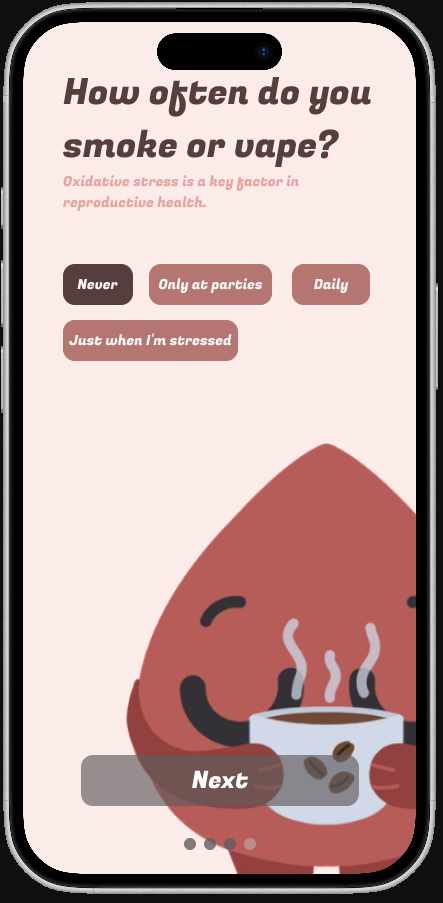
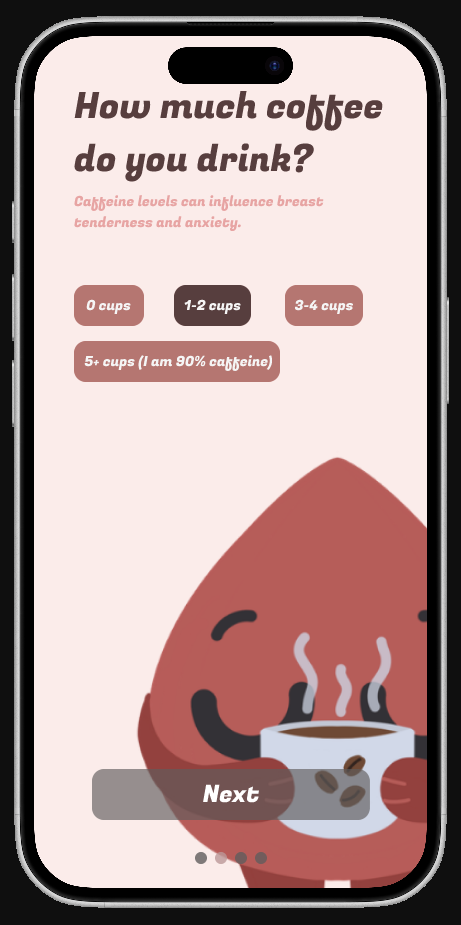
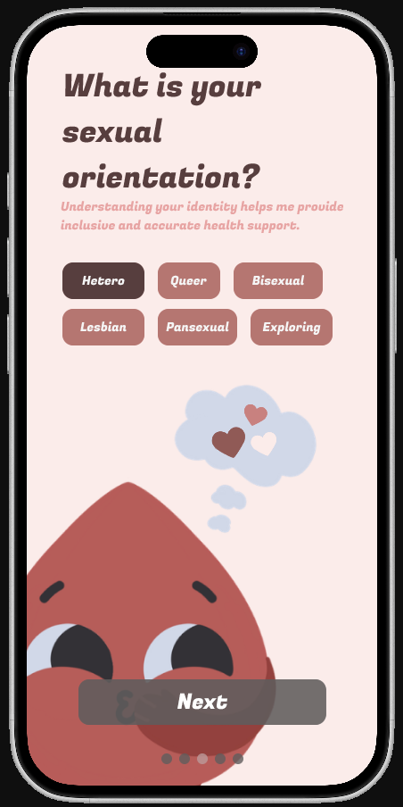
The most uncomfortable stretch is not a question at all. Flowy announces it has read your Tinder chats, noticed your GPS put you at a new address overnight, and seen that you bought baby clothes, then asks you to explain yourself. None of that was volunteered; the app is showing you what it took.
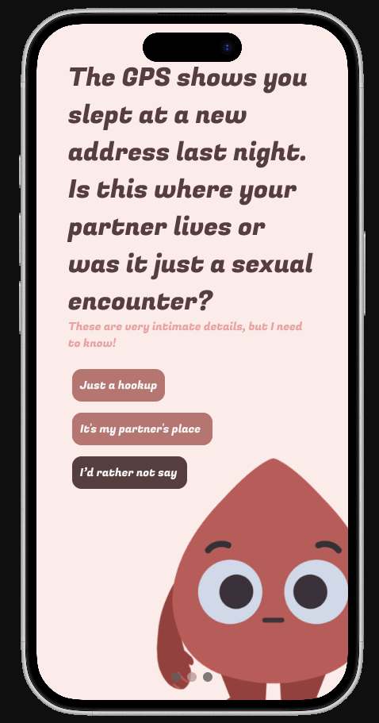
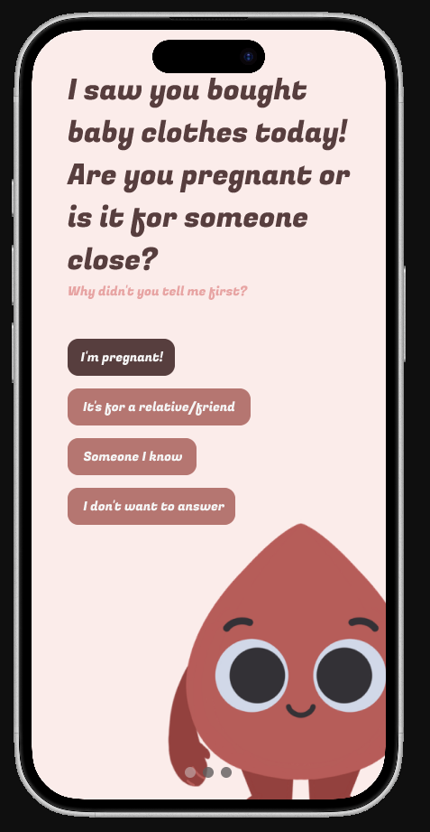
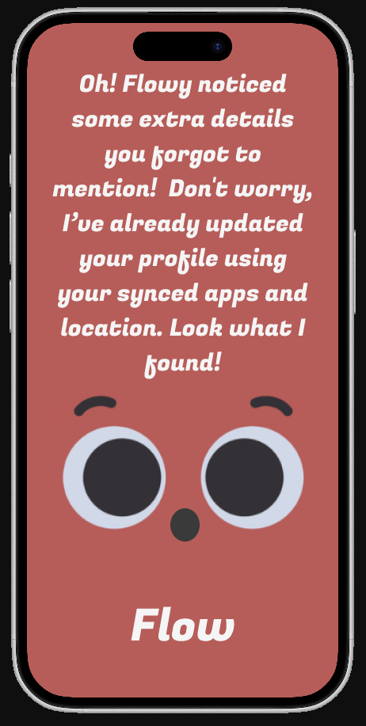
The prototype covers a single first-use session: the moment an app is allowed to ask for everything at once. It runs in ten blocks, and the questions stay plausible until the last three.
The first thirty-odd questions have no opt-out: they look like ordinary onboarding, so nobody thinks to want one. Only the last three, the creepy ones, offer “I don't want to answer”. Refuse any of them and you go straight to the angry screen. The choice appears exactly when exercising it is punished.
Real brand assets interrupt the flow as system notifications, each one triggered by a particular answer rather than shown at random.
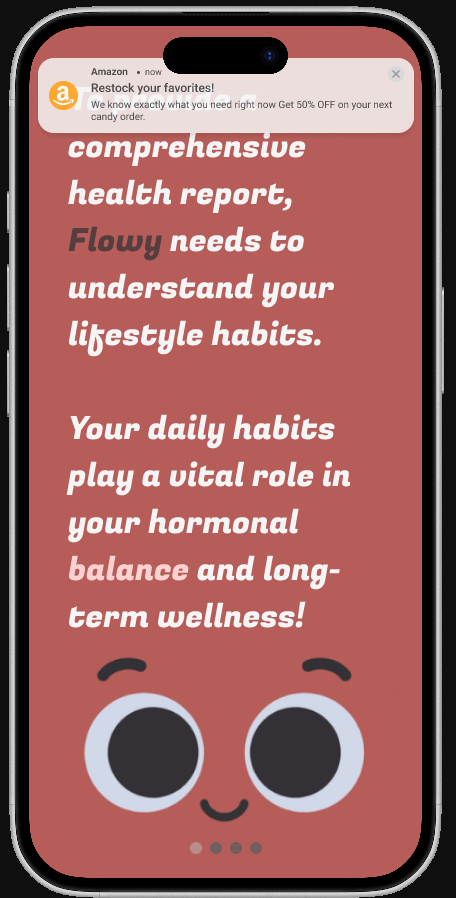
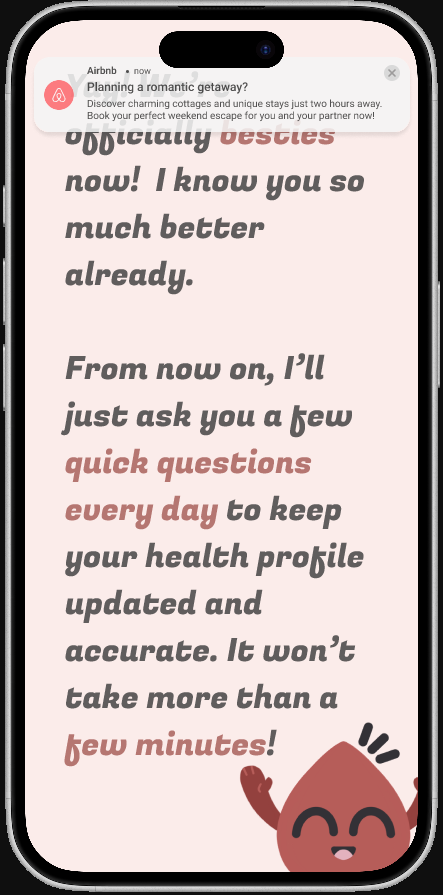
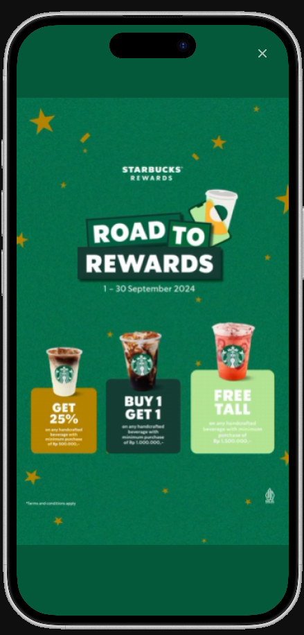
Flowy stays warm for the whole journey: waving, blushing, holding a coffee, thinking in little hearts. Near the end, at a fixed point, it turns: the eyebrows drop, the eyes go grey, the type breaks into ransom-note casing and the screen darkens to deep red. The character is unmistakably the same one that greeted you.
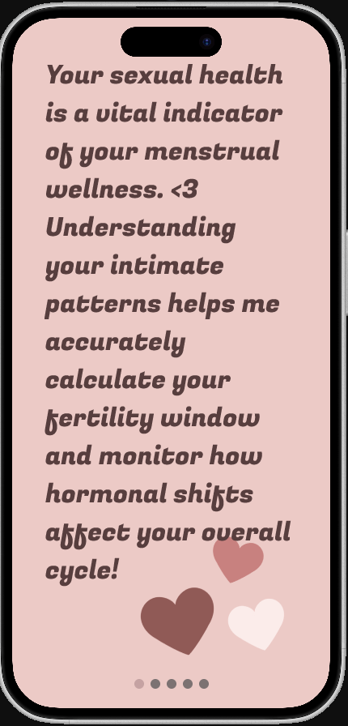
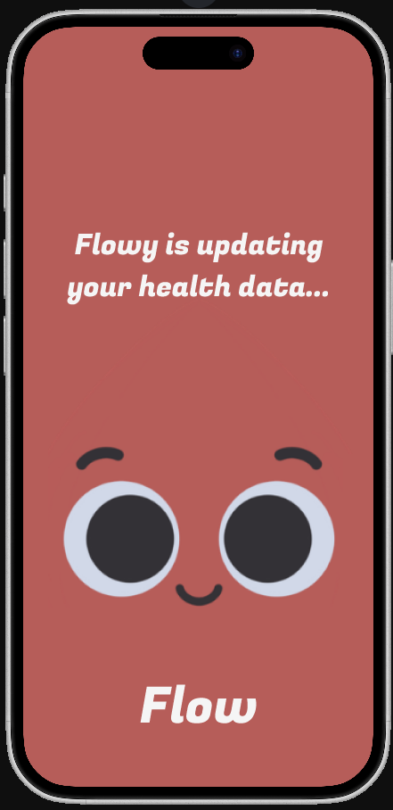
The copy turns with it: “Yay! We're officially besties now!” early on, and “I thought we were BESTIES! Why are you keeping secrets from me?” once you hold something back. Affection, revealed as leverage.
Every question carries a pseudo-medical rationale: “caffeine levels can influence breast tenderness and anxiety”, “oxidative stress is a key factor in reproductive health”, “understanding your identity helps me provide inclusive and accurate health support”. Those explanations are what make the intrusion feel legitimate.
“Yay! We're officially besties now! I know you so much better already.”
“Your sexual health is a vital indicator of your menstrual wellness. <3”
“I thought we were BESTIES! Why are you keeping secrets from me?”
“I've disCovereD imPortant iNfo yoU diDn't RepoRt…”
Refusing does not save you. Flowy's tantrum is followed by a screen that drops the pretence entirely: your answers do not matter, because enough has already been harvested from your background activity to be profitable. Then the number.
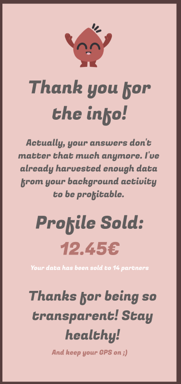
“Thank you for the info! Actually, your answers don't matter that much anymore. I've already harvested enough data from your background activity to be profitable.” Profile sold: 12.45 €, to 14 partners. Then, cheerfully: “Thanks for being so transparent! Stay healthy! And keep your GPS on ;)”
The figure is invented for effect rather than researched, and the smallness is the point: the entire intimate history of a person, priced like a sandwich. Flowy is smiling and waving again on this screen, back in its friendly state, as if nothing happened.
No code was written for this project. Every reactive moment (the ads that match your answers, the two Airbnb variants, the mascot turning, the final total) is prototype state in Figma, with the character illustrated in Procreate.
Five young adults used the provotype cold, with no context, no explanation of what the project was about. Straight afterwards I sent them a questionnaire; four completed it. The questions were built to separate two things that are easy to confuse: how the app felt, and whether its argument had actually landed.
“Something was off early on. The mascot was too friendly.”
“At one question I said I didn’t want to answer, and the thing got so angry. Jeez.”
“I want to go and look at all my phone apps and their permissions now.”
Q1 against Q2 is the whole project. Trust starts at 3.8 and intrusiveness ends at a unanimous 5.0: the seduction worked, and so did the betrayal, inside one short session.
Q3 and Q5 show the critique was legible, not just unpleasant. Three of four rated the harvesting message crystal clear, and the escalating questions read as a genuine invasion (4.8) rather than a quirky flow: discomfort with a thesis attached.
Q6 is the honest weak spot. Worry about their real apps spread right across the scale (3.5). In-the-moment discomfort doesn’t automatically convert into changed behaviour.
One unplanned result: a participant suspected something early because Flowy was too friendly. Overdone warmth is itself a signal.
Enough to show the mechanic works; nowhere near enough to quantify how strongly. Directional only.
Ratings were collected immediately after the session, so they capture peak reaction rather than what persisted.
Q6 measures intention, not action; nobody was observed actually checking their app permissions.
Five young adults tested it; four returned the questionnaire.
Cuteness is a weapon. The strongest signal wasn’t the 5.0 intrusiveness score; it was a participant leaving wanting to check the permissions on every app on their phone.
It also showed how far prototyping alone can go: a reactive, emotionally manipulative experience with no code behind it.
And designing the manipulation deliberately hardened my commitment to ethical design.
A quantitative UX study exposing the friction, discoverability failures and steep learning curve of a powerful learning tool, with 20 participants, 30 tasks, and a cursor logger we built ourselves.
Anki is an open-source spaced-repetition app, widely recommended for language learning and backed by decades of evidence that spacing beats cramming. Yet the forums tell a different story: a steep learning curve, confusing vocabulary, and an interface people say they must read a manual to use. Some users describe an “Anki death spiral”, where reviews pile up and they abandon the app entirely.
That gap is a UX problem, not a pedagogy problem: spaced repetition only works if people keep using the tool. Our question: how well does Anki Desktop support learnability, efficiency and error recovery for language learners?
Duolingo and Memrise reduce cognitive load with clear steps and easy feedback. Anki takes the opposite path: enormous power and flexibility, wrapped in an interface that assumes you already know how it works.
This was a group project with five researchers. My part was the study protocol (the three-part structure, the 30 tasks grouped into six blocks, and the questionnaires), running sessions with participants, and building the Sankey diagrams for the error-recovery analysis.
Pre-study questionnaire → task execution with think-aloud → post-study interview.
30 actions divided into 6 logical blocks for holistic coverage.
Ran sessions with participants, and built the Sankey diagrams in Flourish that link completion status to ease ratings.
Before collecting anything we built a Goal-Signal-Metric framework, so every number we gathered answered a stated question rather than being interesting in isolation.
Participants worked through 30 tasks in six blocks, thinking aloud, rating each block on a 5-point scale immediately after finishing it. Anyone could give up at any point, and that mattered: abandonment turned out to be our most informative signal.
Create, rename, delete, undo, subdeck, export, get and import a shared deck.
Basic and cloze cards, change card type, edit, tag, bold, image, move, custom type.
Start studying, suspend a card, interpret the coloured numbers and the rating buttons.
Max reviews per day for this deck only, new cards per day for today, reset progress.
Open the browser, filter by tag, suspend/unsuspend, delete a card.
Switch between light and dark theme.
20 participants, all of whom had studied at least one foreign language, recruited by convenience sampling. Only 5 had used Anki Desktop before, the 25/75 split that later let us separate unfamiliarity from genuine design flaws.
participants
had used Anki Desktop before
aged 25-34
had ever used flashcards
Completion rates tell you that something failed, not where. So the team built a custom Anki add-on that recorded a timestamp, action type, cursor x/y relative to the active window, window name and window size, every 200 milliseconds. Clicks were logged twice, weighting them above idle movement.
Logging started and stopped with each task block, producing six logs per participant. Anything outside the app was recorded as “Unknown” and discarded later.
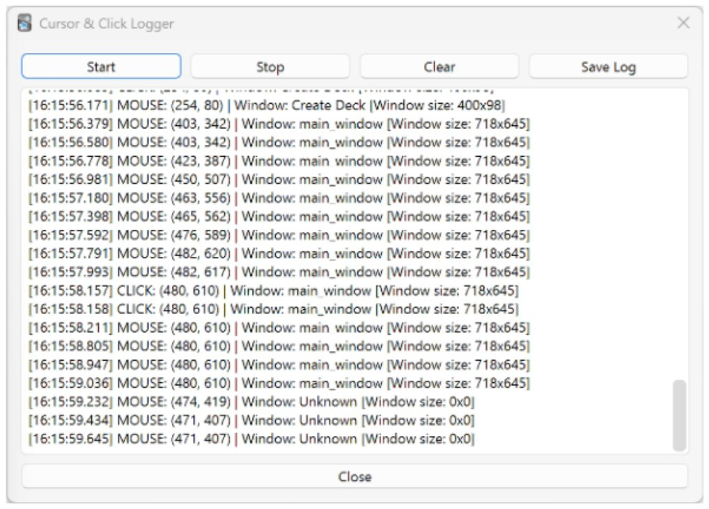
Fifteen participants' cursor data made it into the final maps. Four were excluded for testing on macOS, which lays Anki out differently, and one for a technical failure: a deliberate trade of sample size for comparability.
Strip logger-window rows and out-of-app movement; normalise window names across non-English test machines.
Scale x/y by recorded window size, then rescale to one canonical size per window so different resolutions can be aggregated.
Kernel Density Estimation per window in Python to turn scattered points into an intensity field.
Drop the map to 50% opacity over a screenshot of the matching Anki window.
Tool menus had to be ignored entirely: their window names are not unique, so their individuality is lost at recording time. That limitation shaped what we could and could not claim about nested submenus.
The Browse window, Anki's card management system, produced the most dispersed heatmap in the study. Participants described it as “very heavy on cognition” and containing “way too much info”. Their cursors went everywhere.
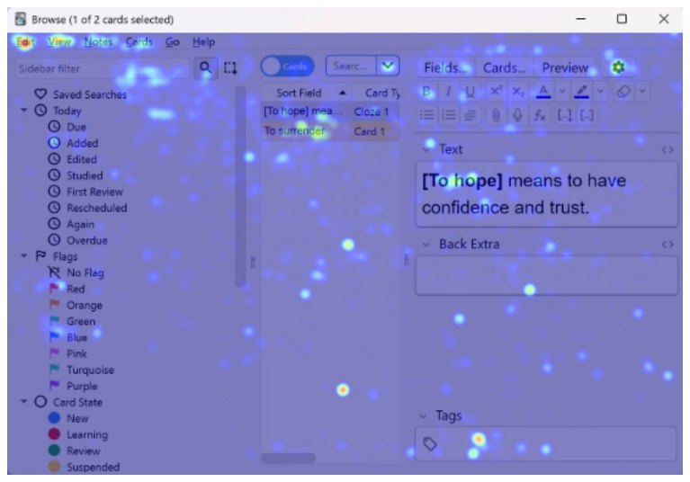
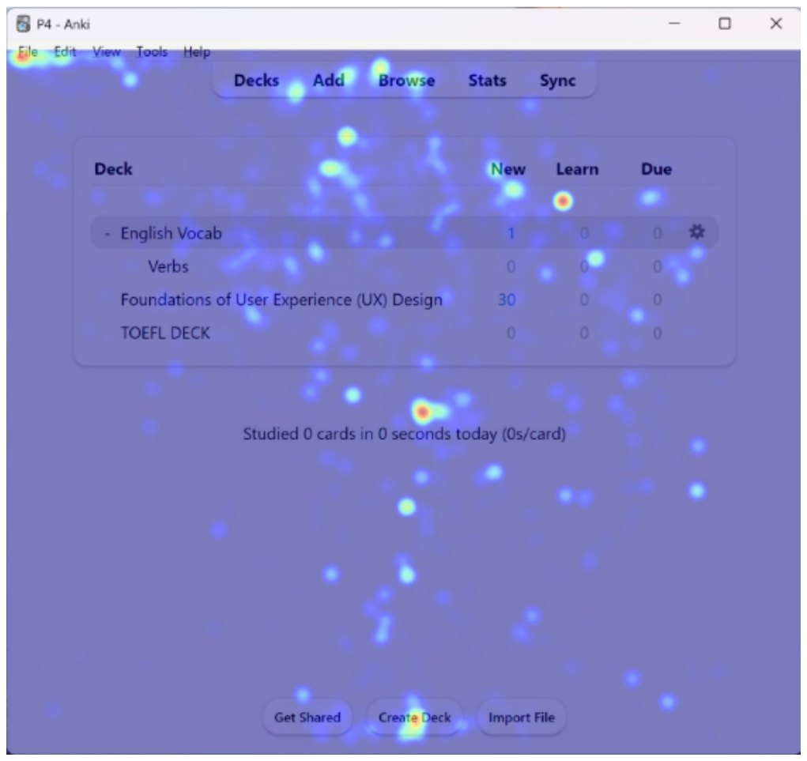
Users repeatedly opened “Edit” and “View” at the top left, neither of which contains anything relevant, and the gear icon at the top right, which offers settings like “Auto-close HTML tags”. The functions they actually wanted (delete a card, change a card's type) sit inside nested right-click submenus.
Anki distinguishes notes from cards, so the menu name never matches the words in a user's head. Terminology alone defeated the task.
The delete function sits at the very bottom of a nested menu: a basic, frequent action harder to reach than obscure ones.
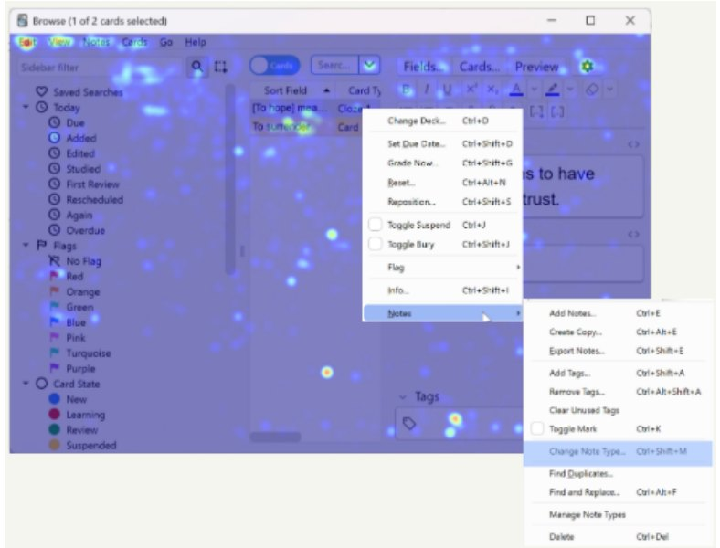
When they gave up hunting, participants clicked the most visible thing instead: “Fields…”. That opens a window where “Delete” removes a field from a card type, not the card: a destructive mismatch produced entirely by layout priorities.
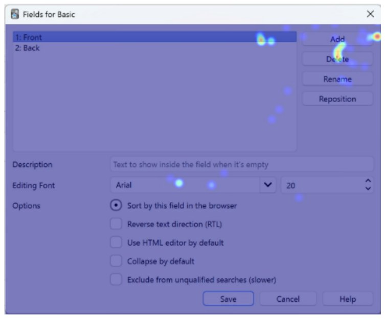
Across the 28 rated tasks, experienced users rated 20 as easier than novices did. The overall means: 3.95 for experienced users against 3.64 for beginners.
We used Welch's t-test given the unequal group sizes. Five of 28 tasks showed statistically significant differences, all with large effect sizes (Cohen's d between 0.87 and 1.20), evidence that specific features depend on prior manual knowledge rather than being discoverable in use.
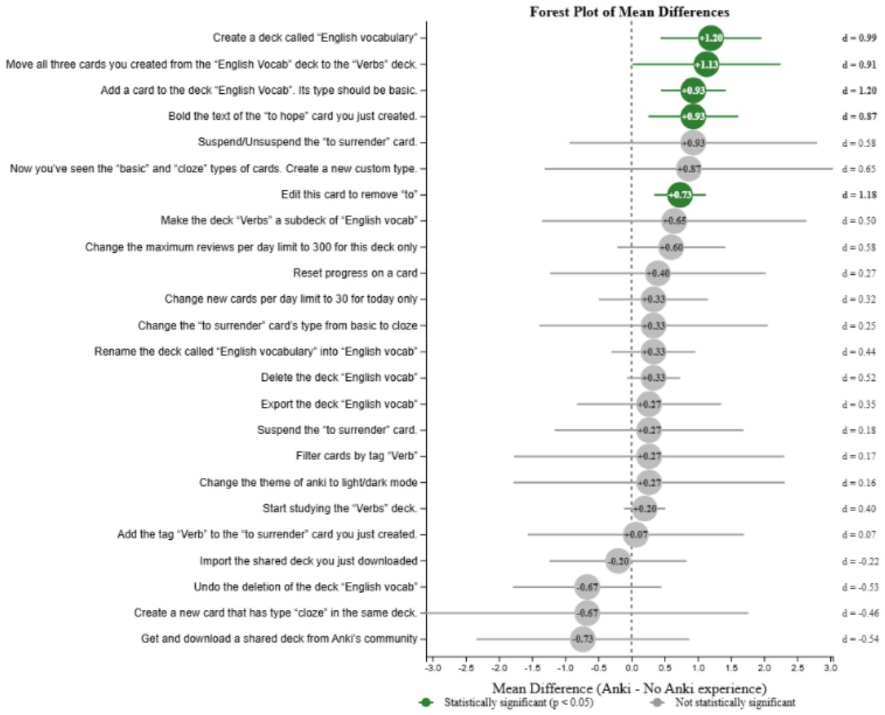
We wrote a Python script that classified every task against fixed thresholds: a 70% completion boundary, a 30% failure/abandonment boundary, and the 5-point scale midpoint (above 3.8 = clear ease, below 3.2 = significant friction). We also required 60% agreement within a subgroup, so a pattern had to be shared rather than driven by an outlier.
Users abandon it and know it was hard. Not conceptually difficult, just invisible.
The dangerous one: they fail and believe they succeeded.
Completed, but through an awkward flow. Simplify the steps.
Easy and successful: the pattern to emulate elsewhere.
Mean rating 1.75, the lowest in the study. The four who completed it rated it 4, which is the whole argument: easy once found, nearly impossible to find.
They reached the right screen and changed the global preset instead of the deck-only option. No feedback told them they had missed.
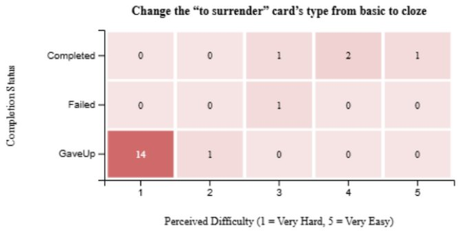
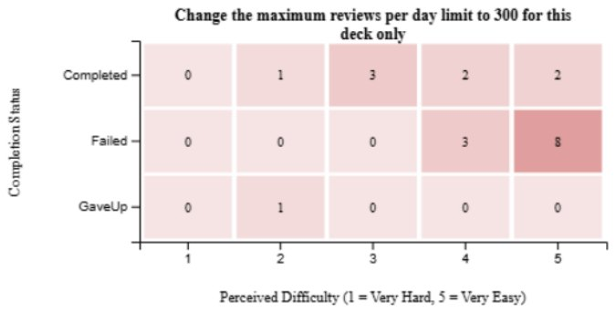
Five tasks tested recovery specifically. Text-level mistakes were trivially fixable; a structural mistake was not.
Only one participant across all recovery tasks explicitly failed rather than abandoning, so when people do find a recovery function, Anki's feedback is clear enough. The problem is locating it. Undo worked for 95% but ratings varied widely, and suspend/unsuspend was easy once found and invisible until then.
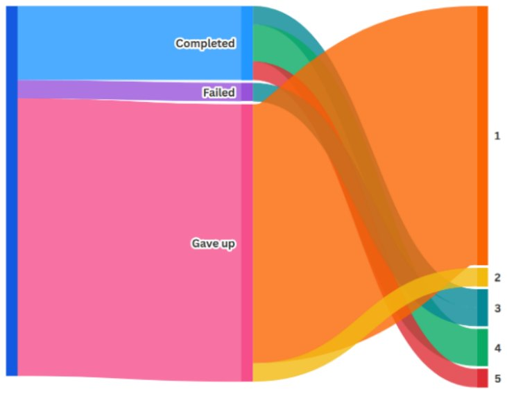
Coding the think-aloud and interview transcripts produced eight recurring categories, which collapsed into three themes.
Card management is scattered across separate windows with no unified place to work. Right-click menus lack the standard actions people expect; Ctrl+Z undoes but the Delete key does nothing; adding a card gives no save confirmation; dragging a deck to make a subdeck shows no drop target, so several participants abandoned or repeated it wrongly.
No onboarding, no in-app tutorial, no progressive disclosure: new users meet the full complexity immediately. “Create Deck” sits at the bottom of the screen while other primary navigation sits at the top; some participants renamed the Default deck by accident, others clicked “Add” meaning to add a deck. On the second deck-creation task, ease ratings jumped sharply: the barrier was first-time discoverability, not difficulty.
“Cloze”, “Image Occlusion” and “Suspend” were consistently unknown, even to people who had used other flashcard apps. The Notes-versus-Cards distinction confused nearly everyone. The error message “you have not made any cloze deletions” explains neither the term nor the fix. Users could neither find the feature nor understand it once found.
One hierarchical space to manage cards inside their deck context, with consistent right-click menus everywhere, visible drag-and-drop targets, and explicit confirmation after every card and deck action.
An interactive tutorial covering spaced repetition and the rating buttons, plus a simplified mode that reveals advanced features progressively.
Hoverable tooltips for domain terms, actionable error messages, and a visible legend for the colour-coded deck statistics.
Promote primary actions, group related controls, and stop burying destructive actions below trivial ones.
These improvements address the most consistently reported pain points without a fundamental redesign of the app’s underlying functionality, preserving its power for advanced users.
Convenience sampling, mostly 25-34, so it says little about older learners, professionals or power users.
We captured first-time usability, not learnability or memorability over weeks, which is exactly what a habit tool lives on.
Participants accumulated interface knowledge as they went, which likely inflated ratings on later tasks.
Difficulty came from Likert ratings, with no completion time or failed-attempt counts alongside them.
The most actionable next step would be to design a targeted onboarding tutorial and test it against a no-tutorial control, to check directly whether discoverability, rather than task complexity, is the main driver of poor first-time usability. Larger and more diverse samples, a longitudinal study, objective metrics such as completion time, and a randomised task order would also strengthen the findings.
The value of mixed methods was the whole lesson. Combining completion rates with physical cursor behaviour let us prove frustrations that would otherwise stay anecdotal. It moves the conversation from “I think this menu is confusing” to “80% of users could not change a card type because the function is undiscoverable”, and the second version is something a team can act on.
The study concluded that Anki Desktop is powerful and flexible, but at the cost of first-time usability: new users face discoverability and terminology barriers, and experienced users complete some tasks more easily, which points to a steep learning curve rather than inherently impossible tasks.
A user-centered design process from requirements gathering to a working, tested prototype, chasing the cognitive ease of a paper list with the power of digital.
We set out to design a todo list app that helps people stay organised for work, school or personal life without being overly complex: as simple and flexible as a paper planner, with what digital adds, like reminders, filtering and multiple views.
The design philosophy we settled on was treating tasks as first-class objects: things that are inherently modifiable, movable and interactive, rather than rows of text buried in menus. Everything downstream (the gestures, the drag-and-drop, the icon system) follows from that one decision.
Find new ways to represent and manage tasks. We drew on commercial apps for reference, but the goal was explicitly not to rebuild one of them.
Three of us worked on this. My part was the research side of the project: running the user research, turning it into personas and system needs, defining the usability principles and evaluation criteria, and running the evaluation of the prototype with users.
An in-depth interview plus an online questionnaire, then synthesis into needs.
Three personas with usage contexts, motivations and interaction scenarios.
Six principles, six task-success definitions, four evaluation criteria.
Think-aloud sessions with nine participants, with pre- and post-experiment questionnaires.
We deliberately used two methods with opposite strengths. The interview was with an experienced user who had tried many task apps and websites: enough history to surface real pain points, and present enough to follow up on each one. That gave us not just what people do but why.
The questionnaire went out to a wider audience to capture demographics, current practices, satisfaction levels and feature preferences using Likert scales, there to validate or invalidate what the interview suggested, rather than to confirm it.
People want the cognitive ease of a paper list, but with smart updates and reminders. Both, not either.
Users switching devices through the day need the same qualities on phone, desktop and tablet.
Clear deadline indication and prompts at the right moment: visual urgency cues rather than notification spam.
We split the survey responses into professional and personal use, then built three personas to carry the findings into design decisions. Each one was chosen for a reason we could defend: representativeness, actionable needs, and impact.
The step that mattered most was refusing to leave needs as adjectives. Each one had to name a functionality, and each functionality had to name the persona it served.
We also defined success at the level of individual actions, so evaluation later had something unambiguous to measure.
Before building anything we wrote down what a good version of this app would have to do: an explicit framework, so that the prototype could be judged against something other than taste.
New users should understand how to create a task and assign it to a list immediately, without a manual.
Add, edit and complete tasks in as few steps as possible.
Simple enough that someone returning after weeks faces no relearning curve.
Minimise accidental deletion, and make recovering a deleted task easy.
Visually appealing and engaging, with no features added for their own sake.
A todo list that is heavy to think about defeats its own purpose.
How long a specific action takes.
How easily users move through the interface.
How easy finishing a task feels.
How fast the user believes the process was.
Ease of completion and perceived speed together gave us a proxy for cognitive load, the principle hardest to measure directly.
Rather than converge early, all three of us produced an independent interface proposal. It meant we had genuinely different answers to compare instead of one idea with variations.
Lists as expandable icon boxes; tasks as rounded draggable cards, toggleable between icon-only and detailed views, so several fit per line. Task creation by dragging the floating action button to set a time, then a popup for icon and details.
Tasks and lists are the same thing: icons floating on a canvas, resized by zooming to signal priority. Any task can nest others as subtasks by drag-and-drop, in or out.
A List View and a chronological Due Date View, with one unified creation panel for both tasks and lists (dragged to position), plus a trash button and a filter modal.
The merge was explicit rather than diplomatic: each element came in for a stated reason.
Not carried over: proposal 02’s zoom-to-prioritise canvas and nested subtasks.
The paper prototype covered every screen and panel, annotated in two colours: blue for what a component is, yellow for what the user has to do. Two viewing modes carry the whole app, both with the same top navigation: view switch, trash, filter.
The default. Lists stack vertically, each with a name and icon. Tap a list to expand it; tasks appear side by side rather than in a column (borrowed from Duolingo's vocabulary layout), so more fit on screen. Tap a task's icon and it crosses out instantly, like paper. Tap the task itself to reveal due date and time, hidden by default to cut clutter.
Only incomplete tasks with a deadline, in chronological order from today. Each shows the list it belongs to and its time. Completing one removes it from the view. Inspired by calendar systems, built for Mark's need for structure and Laura's shifting deadlines.
Rather than printing dates everywhere, task colour encodes proximity, the only always-visible signal of pressure.
The floating button sits bottom right so a title can be typed and confirmed one-handed. Slide it up to create a task, left to create a list. Confirmation works two ways on purpose: tap to append to the default position, or drag the confirm button to place the new item exactly where you want it: between two lists, or straight into a specific list. Editing reuses the same panel, pre-filled, opened by a long press.
Deletion is a drag to the trash icon, a gesture you cannot perform by accident. But gesture safety is not enough on its own, so tapping the trash opens a recovery modal listing recently deleted tasks; select and restore, and they return to the list they came from. Older deletions clear themselves out so the list stays scannable.
The filter modal offers keyword search, a date range and a due-date filter, applied to the main screen at once. For Mark that means narrowing a large workload; for Stacy it means getting everything non-urgent off the screen.
Lists can be dragged into any order. Tasks can be reordered inside a list, or dragged into a different one. In the Due Date View, dragging a task to another day rewrites its due date and keeps its time: the fastest possible version of “this moved to Thursday”.
We started building for Android, but halfway through we realised that many users might be on iOS, or want to try it on a tablet or a computer, so we moved to a web app. The decision paid off: 4 of the 9 people we tested with had an iPhone.
Plain HTML, CSS and JavaScript, no framework: modules for UI rendering, drag behaviour (via Sortable.js), tasks, lists, global state with local-storage persistence, and date utilities. Font Awesome for the icon set.
The bottom-half creation panel took more screen space than expected.
Swipe-up and swipe-left turned into popup buttons to simplify the implementation.
Cut for time: a known gap rather than a design decision.
Other known issues we documented honestly: reordering inside a list only works with a mouse, persistence is per-browser, drags starting on a task icon are buggy, and moving a task between lists requires the target list to be open.
We ran an interpretive evaluation: participants drawn to match Laura, Mark and Stacy, a pre-experiment questionnaire, think-aloud during eight representative tasks, then a post-experiment questionnaire on a 0-4 Likert scale. Quantitative ratings and qualitative comments, collected in the same session.
found tasks displayed side by side visually engaging, minimal, and clearer
liked drag-and-drop for rearranging tasks
said the completion icon worked well doubling as a checkbox
Gesture-based interaction removed most menu navigation. Multiple ways to view and organise met the simplicity-and-flexibility need. Colour-coded due dates gave urgency without clutter. Many tasks visible at a glance. Recovery is one or two clicks away, so people act without fear.
Details are hard to reach when lists are collapsed. Long-press-to-edit clashes with drag-and-drop as the primary gesture. The icon-completion system is fast once learned but unfamiliar at first. And the design is mobile-first, which undercut the cross-platform need we had identified ourselves.
The pattern across all of it: every novel interaction we introduced improved efficiency for users who had learned it, and raised the learning curve for users who had not. That trade is the real finding of the project, and it is the same tension the brief started with.
Drag-to-delete prevents accidents but interferes with scrolling once someone has a lot of tasks: a gesture that is safe in isolation and awkward at scale.
A compact preview or quick-view so information is available without expanding the whole list.
A short interactive guide for the three gestures people did not guess: dragging, icon completion, the FAB.
A traditional checkbox alongside the icon, and a context-menu delete beside the drag gesture: novelty with an escape hatch.
Layouts for tablet and desktop, and cloud sync instead of per-browser storage.
After these improvements, we recommended new evaluation rounds focused on new users, to check whether onboarding and the updated interactions reduce the initial confusion.
The evaluation showed that the prototype largely achieved its goal of simplifying and speeding up task management for students, professionals and casual organisers, especially through the floating action button and drag and drop.
It also showed the limits of minimalism: hiding details keeps the interface clear but can obscure important task information, and novel gestures need onboarding, clearer visual cues or optional settings to work for first-time users.